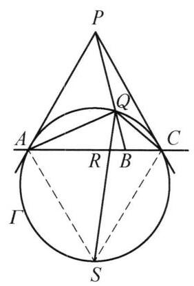

21 例 4：直线定点调和共轭与角平分线
21.1 题目
已知直线上的三个定点依次为 A, B, C,\Gamma 为过 A, C 且圆心不在 {AC} 上的圆. 分别作过 A, C 两点且与圆 \Gamma 相切的直线交于点 P ，线段 {PB} 与圆 \Gamma 交于点 Q . 证明: \angle {AQC} 的平分线与 {AC} 的交点不依赖于圆 \Gamma 的选取.
21.2 参考解答
如图 3-3,设 \angle {AQC} 的平分线与 {AC} 交于 R ,与圆 \Gamma 交于异与 Q 的一点 S .
因为 \triangle {PAC} 是等腰三角形,所以 \frac{AB}{BC} = \frac{\sin \angle {APB}}{\sin \angle {CPB}} .

图 3-3
同理,在 \triangle {ASC} 中, \frac{AR}{RC} = \frac{\sin \angle {ASQ}}{\sin \angle {CSQ}} .
在 \triangle {PAC} 中,由角元形式的塞瓦定理,得
\frac{\sin \angle {APB}}{\sin \angle {CPB}} \cdot \frac{\sin \angle {QAC}}{\sin \angle {QAP}} \cdot \frac{\sin \angle {QCP}}{\sin \angle {QCA}} = 1.
注意到
\angle {PAQ} = \angle {ASQ} = \angle {QCA},
\angle {PCQ} = \angle {CSQ} = \angle {QAC},
则
\frac{\sin \angle {APB}}{\sin \angle {CPB}} = \frac{\sin \angle {PAQ}}{\sin \angle {QAC}} \cdot \frac{\sin \angle {QCA}}{\sin \angle {PCQ}} = \frac{{\sin }^2\angle {ASQ}}{{\sin }^2\angle {CSQ}},
即 \frac{AB}{BC} = \frac{A{R}^2}{R{C}^2} . 原问题得证.
21.3 解题思路与分析
这份证明之所以让人觉得“费解”，是因为它采用了综合法（逆向包装）的书写方式，并且为了刻意配合“角元塞瓦定理”这一特定工具，故意隐去了最核心的中间桥梁——弦长之比 \frac{QA}{QC}，把整个证明强行压缩成了纯角度（角元）的代换。
要看清作者是怎么想出这个证明的，我们可以分三步来还原它的思维过程：先看最自然的“正常人思路”，再看作者是如何把正常思路“翻译”并包装成书上这副模样的。
21.4 一、 破题的本质：如果不用“炫技”，最自然的思路是什么？
拿到这道题，我们的目标是证明点 R 是定点（即不依赖于圆 \Gamma 的选取）。 因为 A, B, C 是直线上的三个定点，线段比 \frac{AB}{BC} 是一个定值；要想证明 AC 上的点 R 也是定点，最自然的定量目标就是：找出 \frac{AR}{RC} 与 \frac{AB}{BC} 之间的函数关系。
如果我们顺着条件往下推，会立刻抓到中间的“桥梁”点 Q：
处理点 R（角平分线条件）： 题目给出 QR 平分 \angle AQC。在 \triangle AQC 中直接用角平分线定理，根本不需要引入点 S，就能瞬间得到： \frac{AR}{RC} = \frac{QA}{QC} 这样，问题立刻转化为：已知切线交点 P 与割线 PQB，如何用 \frac{QA}{QC} 表示 \frac{AB}{BC}？
处理点 B（切线与割线条件）： 由切线长定理知 PA = PC，即 \triangle PAC 是等腰三角形。在 \triangle PAB 和 \triangle PCB 中利用面积比（或正弦定理），很容易把底边比转化为顶角正弦比： \frac{AB}{BC} = \frac{S_{\triangle PAB}}{S_{\triangle PCB}} = \frac{\frac{1}{2} PA \cdot PB \sin \angle APB}{\frac{1}{2} PC \cdot PB \sin \angle CPB} = \frac{\sin \angle APB}{\sin \angle CPB} 接下来，为了把 \angle APB（即 \angle APQ）和 \angle CPB（即 \angle CPQ）与弦长 QA, QC 挂钩，最自然的做法是在 \triangle PAQ 和 \triangle PCQ 中分别对公共边 PQ 用正弦定理：
- 在 \triangle PAQ 中：\sin \angle APQ = \frac{QA \cdot \sin \angle PAQ}{PQ}
- 在 \triangle PCQ 中：\sin \angle CPQ = \frac{QC \cdot \sin \angle PCQ}{PQ}
两式直接相除，消去公共边 PQ： \frac{AB}{BC} = \frac{\sin \angle APQ}{\sin \angle CPQ} = \frac{QA}{QC} \cdot \frac{\sin \angle PAQ}{\sin \angle PCQ}
- 利用弦切角收尾： 由弦切角定理，\angle PAQ = \angle QCA，\angle PCQ = \angle QAC。而在 \triangle QAC 中由正弦定理恰好有 \frac{\sin \angle QCA}{\sin \angle QAC} = \frac{QA}{QC}。代入上式立即得到著名的切线-割线分比公式（陪位中线基本性质）： \frac{AB}{BC} = \frac{QA}{QC} \cdot \frac{QA}{QC} = \left(\frac{QA}{QC}\right)^2 = \frac{AR^2}{RC^2}
你看，顺着“线段比 \frac{QA}{QC}”这条主线思考，每一步都是条件反射，完全没有任何跳跃。
21.5 二、 还原作者的脑回路：书上的证法是怎么“凑”出来的？
既然有上面那么自然的证法，书上的作者为什么要绕个大弯，既引入圆周上的点 S，又去套用“角元塞瓦定理”呢？
这源于竞赛教材编写中常见的“纯角元化（消去线段）”与“对偶构造”思维。作者的构思过程包含以下三个关键动机：
21.5.1 1. 寻找几何对偶：为什么要凭空引入点 S？
在上面的自然思路中，我们对点 B 用了等腰三角形 \triangle PAC 的性质（\frac{AB}{BC} = \frac{\sin \angle APB}{\sin \angle CPB}），而对点 R 用的是 \triangle QAC 的角平分线定理。 但作者注意到了一个极美的几何对称性（对偶性）： * 点 B 是点 Q 与顶点 P 的连线在 AC 上的投影，其中 PA = PC（\triangle PAC 是以 AC 为底边的等腰三角形）； * 点 R 是 \angle AQC 的平分线在 AC 上的投影。而在圆中，圆周角的平分线必然经过该角所对弧的中点！如果延长 QR 交圆 \Gamma 于点 S，那么 S 就是弧 AC 的中点，必然有 SA = SC（即 \triangle ASC 也是以 AC 为底边的等腰三角形）！
这就是引入点 S 的真正原因：一旦标出弧中点 S，点 B 和点 R 的地位就彻底对偶化了！ * 在等腰 \triangle PAC 中，射线 PQ 交底边于 B \implies \frac{AB}{BC} = \frac{\sin \angle APB}{\sin \angle CPB}； * 在等腰 \triangle ASC 中，射线 SQ 交底边于 R \implies \frac{AR}{RC} = \frac{\sin \angle ASQ}{\sin \angle CSQ}。
这就是书中那句看似突兀的“同理，在 \triangle ASC 中…”的由来。作者通过引入点 S，彻底避开了线段比 \frac{QA}{QC}，把已知量和待求量全部统一成了等腰三角形顶角的正弦比。
21.5.2 2. 消去中间线段：为什么会想到用“角元塞瓦定理”？
把 \frac{AB}{BC} 和 \frac{AR}{RC} 都转化成正弦比之后，作者手头的任务变成了純粹的三角恒等变形： \text{如何证明 } \frac{\sin \angle APB}{\sin \angle CPB} = \left(\frac{\sin \angle ASQ}{\sin \angle CSQ}\right)^2 \text{ ？}
在第一节的“自然思路”里，我们是在 \triangle PAQ、\triangle PCQ 和 \triangle QAC 三个小三角形中分别写正弦定理，然后把中间线段 PQ, QA, QC 约掉。 但对于正在编写“角元塞瓦定理”章节的作者来说，看到 \triangle PAC 内部有一个点 Q，且三条塞瓦线 PQ, AQ, CQ 共点于 Q，他立刻意识到：根本不需要分别写三次正弦定理再手动消去线段 PQ, QA, QC，因为“角元塞瓦定理”本身就是这三个正弦定理相乘消去线段后的现成结论！
在 \triangle PAC 中对共点 Q 直接默写角元塞瓦定理： \frac{\sin \angle APB}{\sin \angle CPB} \cdot \frac{\sin \angle QAC}{\sin \angle QAP} \cdot \frac{\sin \angle QCP}{\sin \angle QCA} = 1 把它移项解出 \frac{\sin \angle APB}{\sin \angle CPB}： \frac{\sin \angle APB}{\sin \angle CPB} = \frac{\sin \angle PAQ}{\sin \angle QAC} \cdot \frac{\sin \angle QCA}{\sin \angle PCQ} 你会发现，右边分母、分子拆开后的两项，其实就是第一节中用正弦定理算出来的 \frac{QA}{QC} 和 \frac{\sin \angle PAQ}{\sin \angle PCQ} 的乘积，只是作者借用角元塞瓦定理跳过了一切线段长度的书写。
21.5.3 3. 圆周角与弦切角的一箭双雕
当作者写出上面这个移项后的式子时，右边出现了四个角：分子是 \angle PAQ 和 \angle QCA，分母是 \angle QAC 和 \angle PCQ。 由于点 S 在圆 \Gamma 上，同弧所对的弦切角和圆周角天然相等： * 分子上的两个角都对应弧 AQ：\angle PAQ = \angle QCA = \angle ASQ； * 分母上的两个角都对应弧 CQ：\angle PCQ = \angle QAC = \angle CSQ。
四个角完美坍缩成两个角的平方，直接拼出了 \frac{\sin^2 \angle ASQ}{\sin^2 \angle CSQ}，证毕。
21.6 三、 两种思路的对照图谱
为了直观对比，可以把这两种思维路径对应如下：
| 核心步骤 | 自然探索思路（线元法） | 教材包装思路（纯角元法） | 教材做法的动机剖析 |
|---|---|---|---|
| 转化 \frac{AR}{RC} | 在 \triangle QAC 中用角平分线定理： \frac{AR}{RC} = \frac{QA}{QC} |
延长 QR 交圆于弧中点 S，在等腰 \triangle ASC 中： \frac{AR}{RC} = \frac{\sin \angle ASQ}{\sin \angle CSQ} |
构造与等腰 \triangle PAC 完全对称的等腰 \triangle ASC，将线段比转化为角度正弦比。 |
| 转化 \frac{AB}{BC} | 在等腰 \triangle PAC 中： \frac{AB}{BC} = \frac{\sin \angle APB}{\sin \angle CPB} |
在等腰 \triangle PAC 中： \frac{AB}{BC} = \frac{\sin \angle APB}{\sin \angle CPB} |
起点一致，利用 PA=PC 将底边比化为顶角正弦比。 |
| 建立桥梁 | 对 \triangle PAQ, \triangle PCQ, \triangle QAC 用正弦定理消去 PQ： \frac{\sin \angle APB}{\sin \angle CPB} = \left(\frac{QA}{QC}\right)^2 |
对 (\triangle PAC, Q) 套用角元塞瓦定理，再用弦切角/圆周角代换为 \angle ASQ, \angle CSQ | 用“角元塞瓦定理”一键替代三次正弦定理，实现全程不出现任何圆内弦长 QA, QC 的纯角元证明。 |
当你以后在竞赛书里再看到这种“莫名其妙列出角元塞瓦定理，然后几个等角代换就刚好凑出平方”的证明时，它的背后几乎都是利用正弦定理做弦长比代换（如陪位中线、调和四边形性质）被刻意抹去线段长度后的产物。
21.7 分步证明
21.7.1 步骤 0：基础构型：定点 A, B, C 与切线交点 P
在直线 AC 上依次取定点 A, B, C。 构造过 A, C 的圆 Γ（圆心不在 AC 上）。 过 A, C 作圆 Γ 的切线交于点 P。 连结线段 PB 交圆 Γ 于点 Q，连结弦 QA, QC。
21.7.2 步骤 1：等腰 △PAC 结合正弦定理
由切线长定理知 PA = PC，故 △PAC 为等腰三角形。 在 △PAB 和 △PCB 中分别利用正弦定理：
( = ), ( = )
因为 A, B, C 共线，∠PBA + ∠PBC = 180°（正弦相等），且 PA = PC，两式相比立即得出：
( = ) … (1)
21.7.3 步骤 2：角平分线 QS 与等腰 △ASC
作 ∠AQC 的平分线交 AC 于点 R，与圆 Γ 再次交于异于 Q 的一点 S。 因为 QS 平分 ∠AQC，所以圆周角 ∠AQS = ∠CQS。 由等圆周角对等弧，弧 AS = 弧 CS，从而弦长 SA = SC，△ASC 为等腰三角形。 在 △ASR 和 △CSR 中应用正弦定理，同理可得：
( = = ) … (2)
21.7.4 步骤 3：弦切角定理与等角链构建
利用弦切角定理与同弧圆周角性质建立两组关键等角链： 1) 直线 PA 切圆于 A，由弦切角定理知 ∠PAQ = ∠QCA；又弧 AS = 弧 CS，故圆周角 ∠ASQ = ∠QCA。因此：
( PAQ = ASQ = QCA )
- 同理，直线 PC 切圆于 C，弦切角 ∠PCQ = ∠QAC；又圆周角 ∠CSQ = ∠QAC。因此：
( PCQ = CSQ = QAC )
21.7.5 步骤 4：角元塞瓦定理与两式平方转换
在 △PAC 中，三射线 PB(PQ), QA, QC 共点于 Q。 由角元形式的塞瓦定理（Trigonometric Ceva’s Theorem）：
( = 1 )
移项代入 Step 3 的等角链：
( = = ) … (3)
21.7.6 步骤 5：最终结论：R 为定比内分点，与圆无关
综合式 (1)、式 (2) 与式 (3)：
( = = ( )^2 )
两边取算术平方根，立即得出：
( = )
因为定点 A, B, C 固定在直线上，比值 AB / BC 是恒定的几何常数！ 因此内分比 AR / RC 唯一确定，点 R 的位置完全不依赖于圆 Γ 的选取，原命题得证！